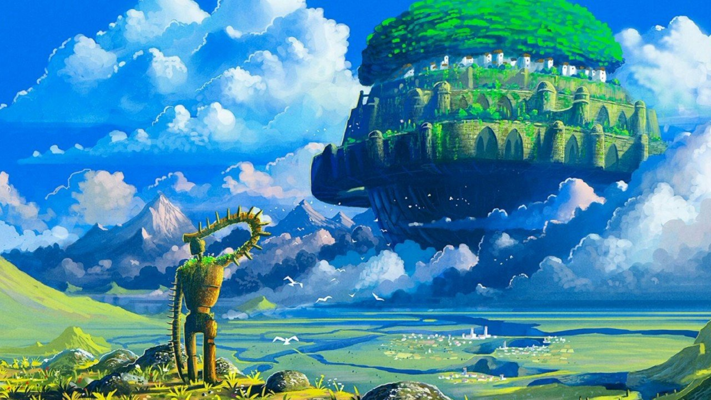

CASTLE IN THE SKY

After plummeting from an airship following a pirate raid, a young girl named Sheeta is saved when her mysterious crystal pendant begins to glow, slowing her descent into a quiet mining town. She is caught by Pazu, an optimistic orphan who dreams of finding Laputa, a legendary lost city in the clouds. Their meeting sparks a high-stakes adventure as they flee from both the persistent Dola gang of air pirates and a cold-blooded government agent named Muska, who seeks to harness the ancient, destructive power Sheeta unknowingly carries. Together, the two children embark on a journey to the sky to discover Sheeta’s true identity and protect the floating kingdom from those who would use it for conquest.